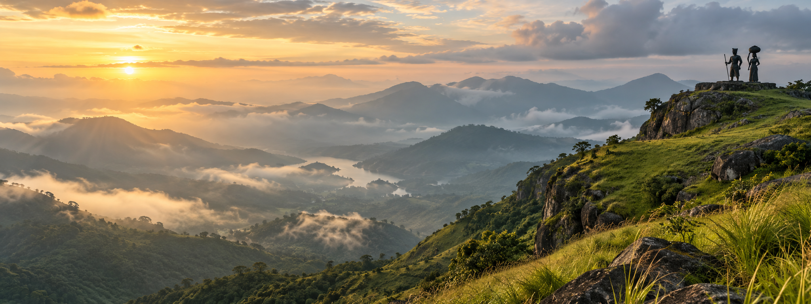

01 / ADVENTURE
Walk the wind trail
Climb through open grassland to the viewpoint as the valley wakes below.
↗
3,500 ft above the ordinary
Stand at the edge of Kerala and watch the Western Ghats unfold beneath you — wild, windswept, unforgettable.
A HIDDEN HEIGHT IN IDUKKI
Ramakkalmedu is a highland escape shaped by untamed winds and sweeping views. From its rocky ledges, the patchwork plains of Tamil Nadu stretch to the horizon while Kerala's spice hills rise behind you.
Discover the story →WAYS TO WANDER
Slow mornings, spirited climbs, and horizons that seem to go forever. Choose what calls you.
The hills don't ask you to hurry. They ask you to listen.— A local saying
ROOTED IN LEGEND
Ramakkalmedu takes its name from the legend of Lord Rama, believed to have set foot on this hill while searching for Sita. Today, the towering figures of Kuravan and Kurathi honour the indigenous couple who helped shape Idukki's story.
See the landmarks →YOUR JOURNEY STARTS HERE
The hills are waiting. Pack light, bring a layer, and leave room for wonder.
Get directions ↗